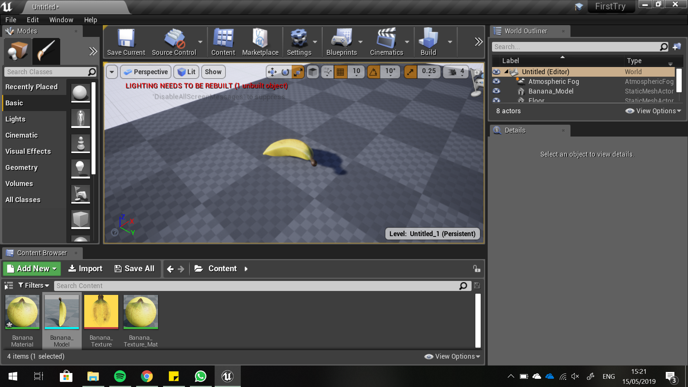
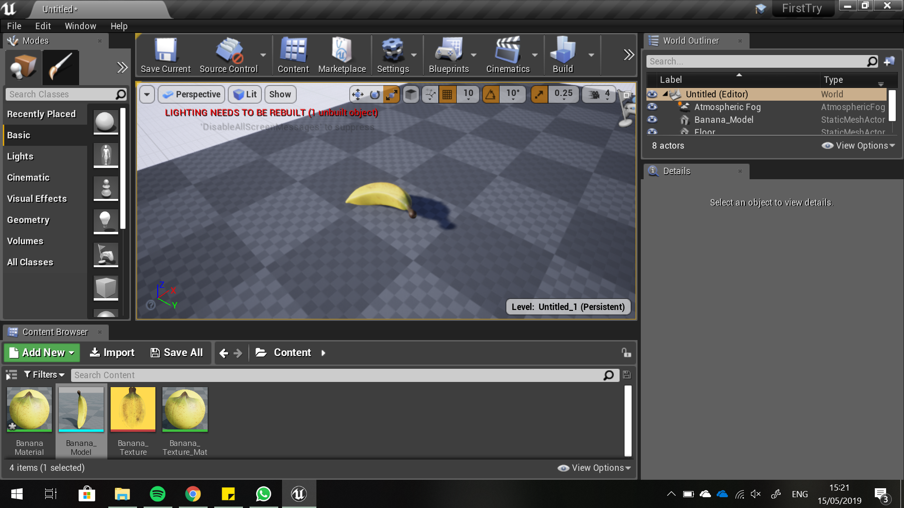

This is the second workshop.
 

It was difficult for me to begin working with Unreal Engine. Not because I don’t understand the concept, but because I found interface and vocabulary of the software to be quite complex to understand and also because it requires a lot of computer resources which I can’t provide generously. Nevertheless, first assignment/tutorial was quite a success I would say, I made banana happen despite all of the technical difficulties (it crashed and lagged a bit). I was happy with the result, but since everything was written in the given tutorial there wasn’t a lot of space to fail.

Second assignment/tutorial was more difficult, since it required more actions in order to achieve the intended goal. Although I found it interesting and fun (despite all technical issues) and enjoyed creating a game world.
I found interesting to work with blueprints, since you don’t need to code when using them, but they still are similar to coding and require some knowledge about it before in order to understand what is happening. Although, after a bit, I got overwhelmed with the quantity of information software carries, and got lost few times, but always found my way back.
Videos above show the movement my project had which was done according to the tutorials. After this, I would like to experiment more with other meshes and create one myself, rather than exploring the Unreal Engine itself, which proved to be interesting to work with too.

This assignment was difficult in the means of technicalities – at the day of the workshop I didn’t have HDMI adapter for my laptop and so consequently I couldn’t do the projections from my computer. So I rented out the projector other day and did the projections at home. I decided to project on a plant, it was a fake orchid. I wanted every petal to be different and fun, and so I used a lot of ellipses by carefully placing them on the right locations. Sometimes the petal consisted of few ellipses which made it difficult to add texture on it afterwards. In the final result, I had two petals react to the sound, three had photos of friends’ faces on them, others had textures and solid colour fills. Overall I found this assignment to be very fun and exciting, I liked placing the shapes and filling them later on.